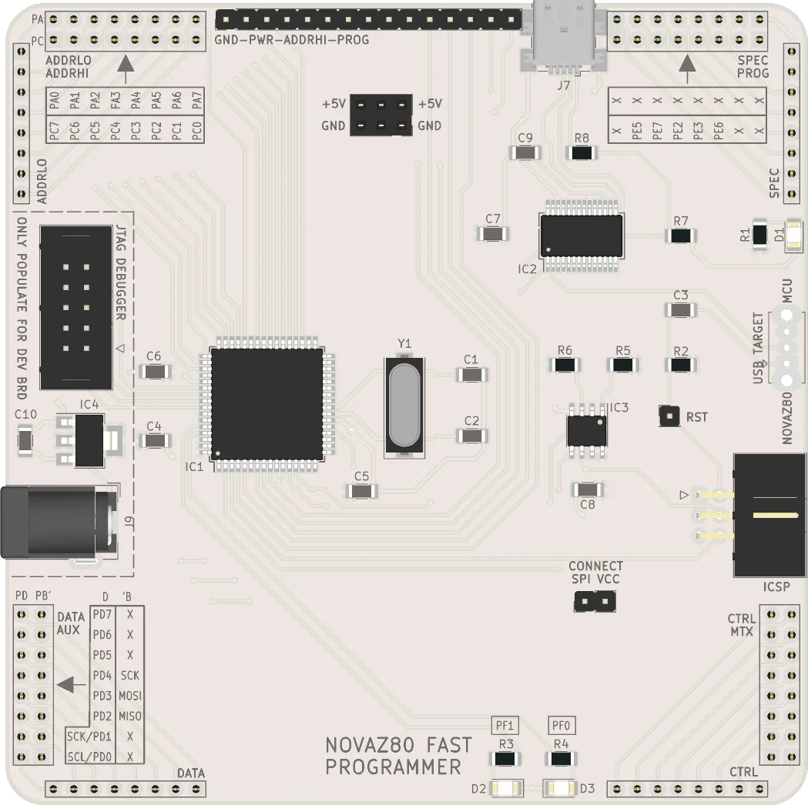

V102-PR1-2
Fast programmer
Takes over the bus and writes the CPU board's ROM where it sits.
- Controller
- ATmega64A at 16 MHz
- Buffer
- 64 K SPI SRAM
- Link
- USB, through an FT232RL
- Writes
- 64-byte pages
- Targets
- All three CPU boards

What's on the board

How it works
- ATmega64A at 16 MHz drives A0–A15 and D0–D7 straight from its own ports
- FT232RL USB link; image buffered in a 23LC512 SPI SRAM and echoed to the host
- Takes the bus with BUSRQ, writes the 28C256 in 64-byte pages with DATA polling, verifies, resets the target
- Bus, J12 or barrel jack (AMS1117) power; ICSP and JTAG for its own firmware
What it took
- Speed: direct port drive meets the 28C256's 150 µs page window, so page mode works where PR2's I²C could not
- Same serial protocol as PR2, so the host script didn't change
- One programmer for all three CPU boards via the generic PROG lines
Next revision
- “XXX” EOF marker can occur in real data: use a length prefix
- No BUSAK feedback and no series resistors on the bus drive
- Handle EEPROM software data protection
- BOD at 4.0 V; standard ISP/JTAG pinouts
Schematic
Tap to open it full screen, then pinch, scroll or drag to explore. It stays sharp at any zoom.
Photo and files
Live photo: board-pr1.jpgThe built Fast programmerStraight down or three-quarter view, chips fitted, plain background.